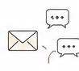
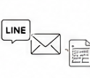
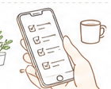
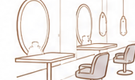
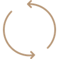

問い合わせ対応が人によってバラバラ
運営の属人化から、成長できる仕組みへ
“人に頼らず回る状態”に整えます
美容サロン・講座・コミュニティなど、継続型ビジネスの運営を顧客対応からバックオフィスまで仕組み化します。

問い合わせ対応が人によってバラバラ
予約・申込の流れが整っていない
毎回同じ説明を繰り返している

情報がLINE・メール・シートに分散
自分がいないと運営が止まってしまう
継続的に顧客対応が発生する事業の方へ
受講者対応・案内・フォロー業務を整え、コンテンツ制作に集中したい方へ。

メンバー対応・情報発信・サポート業務を効率化したい方へ。

予約管理・顧客対応・リピート施策など、日々の運営に追われている方へ。

運営が止まらなくなる現場で培ってきた経験をもとに、実務目線でサポートします。
請求書・見積書の作成。顧客対応や発注対応など、幅広く対応。
問い合わせ対応やサポート業務を通じて、お客様に寄り添う対応を大切にしています。
関数やマクロの仕様も可能。
高度なスキルで業務効率化を支えます。
日々の運営がスムーズに進むよう、正確さ・丁寧さを大切にサポートします。
作業だけではなく、“回る運営”を一緒につくります
日々の運営を、まずは安定させたい方向け
月額60,000円
月30時間目安
日々の細かい運営負担を減らしたい
まずは一部だけ任せたい
作業の抜け漏れを減らしたい
“回る運営”を一緒に整えていきたい方向け
月額120,000円
月40時間目安
属人化を減らしたい
引き継げる状態を作りたい
運営全体を整えたい
運営・改善・仕組み化まで伴走する継続支援
月額300,000円
月40時間目安
自分がいないと回らない
人を増やす前に整えたい
“運営者目線”で一緒に整えてほしい
その場しのぎの対応ではなく、繰り返さなくていい運営へ整えます。仕組み化とカスタマーサポートの視点で、あなたのビジネスの成長を支えます。